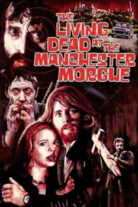

Also known as:Non si deve profanare il sonno dei morti (original title)
Country:Italy, 95 minutes
Spoken languages:
Genres:Sci-Fi, Horror
Director(s):Jorge Grau
Writer(s):Sandro Continenza, Marcello Coscia, Juan Cobos, Miguel Rubio
Video Codec:Unknown
Number: 2232


Certification:R
Storyline:
When a series of murders hit the remote English countryside, a detective suspects a pair of travelers when it is actually the work of the undead, jarred back to life by an experimental ultra-sonic radiation machine used by the Ministry of Agriculture to kill insects.
Cast:
Medium: Bluray,
Loaned: No
Aspect ratio: Unknown